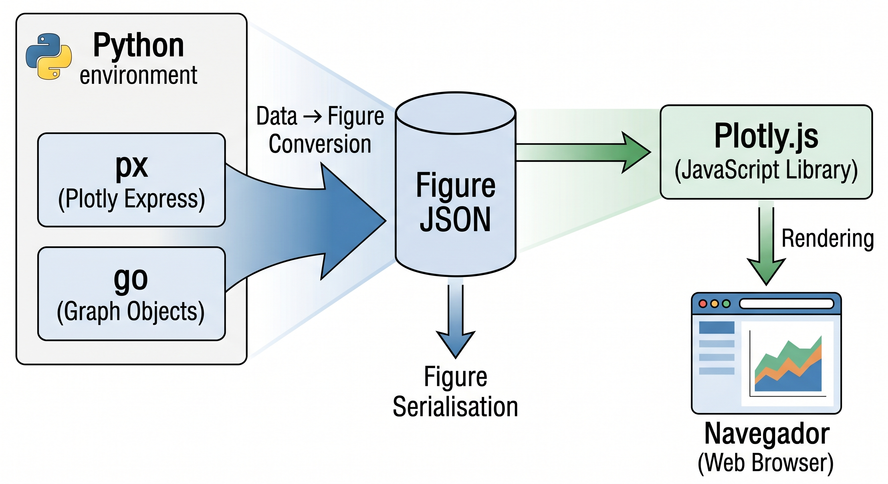
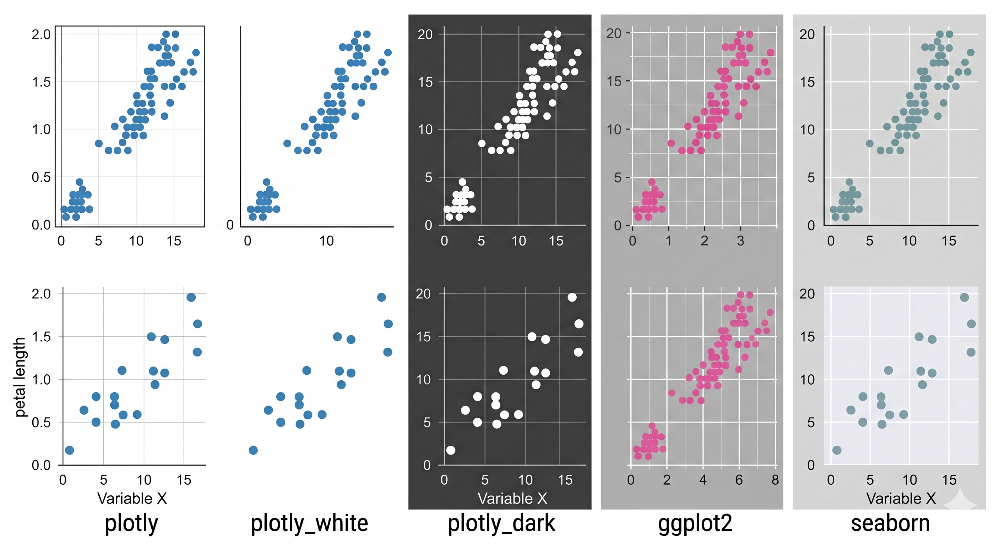
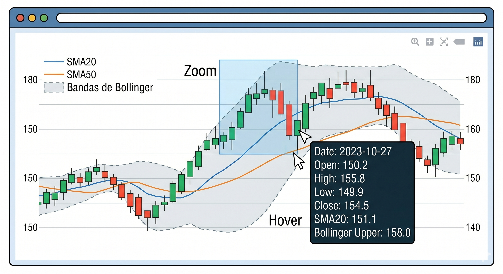
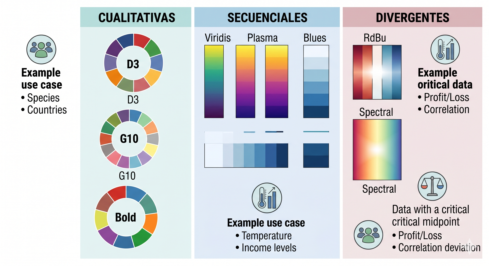

1.3.7 Visualizacion Interactiva con Plotly#
Indice#
1. Arquitectura y Ecosistema#
1.1 Las capas de Plotly#
plotly.express (px) ← API de alto nivel, una linea por grafica
↓ genera
plotly.graph_objects (go) ← API de bajo nivel, control total
↓ genera
JSON / dict de figura ← Representacion interna portable
↓ renderiza
Plotly.js (JavaScript) ← Motor de renderizado en el navegador
A diferencia de Matplotlib (renderizado en Python), Plotly genera una especificacion JSON que renderiza Plotly.js en el navegador. Esto da interactividad nativa: zoom, pan, hover, filtros, sin codigo adicional.

### 1.2 Comparativa con Matplotlib y SeabornAspecto |
Matplotlib |
Seaborn |
Plotly |
|---|---|---|---|
Renderizado |
Python (raster/vector) |
Python |
JavaScript (navegador) |
Interactividad |
Limitada |
Limitada |
Nativa completa |
Curva de aprendizaje |
Alta |
Media |
Media |
Dashboards |
No |
No |
Si (con Dash) |
Publicaciones |
Excelente |
Excelente |
Buena |
3D interactivo |
Limitado |
No |
Excelente |
Graficas financieras |
Manual |
No |
Nativo |
Graficas geograficas |
Con cartopy |
No |
Nativo |
1.3 Instalacion y configuracion#
import plotly.express as px
import plotly.graph_objects as go
from plotly.subplots import make_subplots
import plotly.io as pio
import pandas as pd
import numpy as np
from scipy import stats
# Configurar el renderer por defecto
# 'browser' : abre en el navegador predeterminado
# 'notebook' : muestra en Jupyter Notebook (clasico)
# 'notebook_connected': Jupyter con CDN de Plotly
# 'vscode' : VS Code
# 'png' : imagen estatica (requiere kaleido)
pio.renderers.default = 'notebook' # cambiar segun el entorno
print(f'Plotly version: {px.__version__}')
1.4 La figura como objeto JSON#
Toda figura de Plotly es un diccionario Python serializable en JSON:
# Estructura basica de una figura Plotly
fig = go.Figure(
data=[...], # lista de traces (las "capas" de datos)
layout=go.Layout(
title=...,
xaxis=...,
yaxis=...,
)
)
# La figura es un dict accesible
print(fig.to_dict()) # ver la estructura completa
# Actualizar partes de la figura
fig.update_layout(title_text='Nuevo titulo')
fig.update_traces(marker_size=8)
# update_layout con dict anidado via underscore
# 'title_text' equivale a layout.title.text
# 'xaxis_title' equivale a layout.xaxis.title
fig.update_layout(
title_text='Titulo',
xaxis_title='Eje X',
yaxis_title='Eje Y',
legend_title='Leyenda',
)
2. Plotly Express: la API Rapida#
plotly.express (px) genera figuras completas en una sola llamada. Internamente usa graph_objects.
2.1 Datasets de ejemplo#
# Plotly incluye datasets clasicos
gapminder = px.data.gapminder() # desarrollo mundial 1952-2007
tips = px.data.tips() # propinas en restaurante
iris = px.data.iris() # medidas de flores
penguins = px.data.penguins() # medidas de pinguinos (desde Plotly 5)
wind = px.data.wind() # datos de viento
carshare = px.data.carshare() # comparticion de autos en Montreal
stocks = px.data.stocks() # precios de acciones
election = px.data.election() # resultados electorales
medals = px.data.medals_long() # medallas olimpicas
print(gapminder.head())
print(gapminder.columns.tolist())
2.2 Parametros comunes de px#
# Todos los parametros clave de plotly.express:
fig = px.scatter(
data_frame=df, # DataFrame de pandas
x='columna_x', # variable eje X
y='columna_y', # variable eje Y
color='col_cat', # variable -> color de los puntos/lineas
size='col_num', # variable numerica -> tamaño
symbol='col_cat', # variable categorica -> marcador
facet_col='col', # crear subplots por columna
facet_row='fil', # crear subplots por fila
animation_frame='año', # variable para animacion
hover_name='col', # nombre en el tooltip
hover_data=['c1','c2'], # columnas adicionales en el tooltip
text='col', # etiqueta de texto en cada punto
title='Titulo',
labels={'x_col': 'Etiqueta X', 'y_col': 'Etiqueta Y'},
color_discrete_sequence=px.colors.qualitative.Set2,
color_continuous_scale='Viridis',
template='plotly_white', # tema
width=800, height=500,
)
fig.show()
3. Graficas de Dispersion y Lineas#

3.1 px.scatter() — Dispersion interactiva#
gapminder = px.data.gapminder()
gapminder_2007 = gapminder[gapminder['year'] == 2007]
# ── Scatter con multiples dimensiones ─────────────────
# El hover de Plotly muestra automaticamente todos los datos
fig = px.scatter(
gapminder_2007,
x='gdpPercap',
y='lifeExp',
size='pop', # tamaño del punto = poblacion
color='continent', # color = continente
hover_name='country', # pais al hacer hover
hover_data={ # control fino del tooltip
'pop' : ':,.0f', # formato numerico con separador de miles
'gdpPercap' : ':$,.0f', # formato moneda
'lifeExp' : ':.1f',
'continent' : False, # ocultar del tooltip
},
size_max=60, # tamaño maximo de los puntos
log_x=True, # escala logaritmica en X
title='Gapminder 2007: PIB per capita vs. Esperanza de vida',
labels={
'gdpPercap': 'PIB per capita (USD, log)',
'lifeExp' : 'Esperanza de vida (años)',
'pop' : 'Poblacion',
},
template='plotly_white',
)
# Ajustar apariencia con update_traces y update_layout
fig.update_traces(
marker=dict(
opacity=0.8,
line=dict(width=1, color='white'), # borde blanco en cada punto
)
)
fig.update_layout(
legend=dict(title='Continente', orientation='v'),
xaxis=dict(showgrid=True, gridcolor='lightgray'),
yaxis=dict(showgrid=True, gridcolor='lightgray'),
)
fig.show()
3.2 px.line() — Lineas temporales#
stocks = px.data.stocks()
# ── Lineas con rango selector ─────────────────────────
fig = px.line(
stocks,
x='date',
y=['GOOG', 'AAPL', 'AMZN', 'FB'], # multiples columnas como Y
title='Precios de acciones tecnologicas',
labels={'value': 'Precio (USD)', 'variable': 'Empresa', 'date': 'Fecha'},
template='plotly_white',
)
# Añadir selector de rango temporal
fig.update_layout(
xaxis=dict(
rangeselector=dict(
buttons=[
dict(count=1, label='1M', step='month', stepmode='backward'),
dict(count=6, label='6M', step='month', stepmode='backward'),
dict(count=1, label='1A', step='year', stepmode='backward'),
dict(step='all', label='Todo'),
]
),
rangeslider=dict(visible=True), # slider debajo del grafico
type='date',
)
)
fig.show()
3.3 go.Scatter — Control total con graph_objects#
x = np.linspace(0, 4 * np.pi, 300)
fig = go.Figure()
# Cada trace es una capa independiente
# mode: 'lines', 'markers', 'text', 'lines+markers', 'lines+markers+text'
fig.add_trace(go.Scatter(
x=x, y=np.sin(x),
mode='lines',
name='sin(x)',
line=dict(color='royalblue', width=2.5, dash='solid'),
))
fig.add_trace(go.Scatter(
x=x, y=np.cos(x),
mode='lines',
name='cos(x)',
line=dict(color='darkorange', width=2.5, dash='dash'),
))
# Area bajo la curva: fill hasta el eje X
fig.add_trace(go.Scatter(
x=x, y=np.sin(x)**2,
mode='lines',
name='sin²(x)',
fill='tozeroy', # rellenar hasta y=0
fillcolor='rgba(0, 128, 0, 0.15)',
line=dict(color='seagreen', width=1.5),
))
# Banda de confianza: fill entre dos curvas
y_upper = np.sin(x) + 0.3
y_lower = np.sin(x) - 0.3
fig.add_trace(go.Scatter(
x=np.concatenate([x, x[::-1]]),
y=np.concatenate([y_upper, y_lower[::-1]]),
fill='toself',
fillcolor='rgba(65, 105, 225, 0.15)',
line=dict(color='rgba(255,255,255,0)'),
name='IC ± 0.3',
showlegend=True,
))
fig.update_layout(
title='Funciones trigonometricas con area rellena',
xaxis_title='x (rad)',
yaxis_title='f(x)',
template='plotly_white',
hovermode='x unified', # tooltip unificado: muestra todos los traces en el mismo x
)
fig.show()
3.4 Scatter con linea de tendencia#
tips = px.data.tips()
# Seaborn tiene regplot; en Plotly se usa trendline
fig = px.scatter(
tips,
x='total_bill',
y='tip',
color='smoker',
trendline='ols', # 'ols'=minimos cuadrados, 'lowess'=suavizado local
trendline_scope='overall', # 'trace'=uno por grupo, 'overall'=uno global
trendline_color_override='black',
opacity=0.7,
title='Regresion lineal: propina vs. cuenta total',
labels={'total_bill': 'Cuenta total ($)', 'tip': 'Propina ($)'},
template='plotly_white',
)
# Obtener los resultados de la regresion
resultados_ols = px.get_trendline_results(fig)
print("Resultados OLS:")
print(resultados_ols.px_fit_results.iloc[0].summary())
fig.show()
4. Graficas de Barras y Categoricas#
4.1 px.bar() — Barras interactivas#
gapminder = px.data.gapminder()
top_pais = (gapminder[gapminder['year'] == 2007]
.nlargest(15, 'gdpPercap'))
# ── Barras horizontales ordenadas ─────────────────────
fig = px.bar(
top_pais.sort_values('gdpPercap'),
x='gdpPercap',
y='country',
color='continent',
orientation='h', # horizontal
text='gdpPercap', # mostrar valor en la barra
title='Top 15 paises por PIB per capita (2007)',
labels={'gdpPercap': 'PIB per capita (USD)', 'country': 'Pais'},
color_discrete_sequence=px.colors.qualitative.Bold,
template='plotly_white',
)
fig.update_traces(
texttemplate='$%{x:,.0f}', # formato del texto en la barra
textposition='outside', # 'inside', 'outside', 'auto'
cliponaxis=False,
)
fig.update_layout(
xaxis=dict(tickformat='$,.0f'),
showlegend=True,
margin=dict(l=100),
)
fig.show()
4.2 Barras apiladas y agrupadas#
medals = px.data.medals_long()
fig1 = px.bar(
medals,
x='nation',
y='count',
color='medal',
barmode='stack', # 'stack', 'group', 'overlay', 'relative'
color_discrete_map={
'gold' : '#FFD700',
'silver': '#C0C0C0',
'bronze': '#CD7F32',
},
title='Medallas olimpicas (barras apiladas)',
labels={'count': 'Cantidad', 'nation': 'Nacion', 'medal': 'Medalla'},
template='plotly_white',
)
fig1.show()
fig2 = px.bar(
medals,
x='nation',
y='count',
color='medal',
barmode='group', # barras agrupadas
color_discrete_map={'gold':'#FFD700','silver':'#C0C0C0','bronze':'#CD7F32'},
title='Medallas olimpicas (barras agrupadas)',
template='plotly_white',
)
fig2.show()
4.3 px.box() y px.violin() — Categoricas estadisticas#
tips = px.data.tips()
# ── Boxplot interactivo ───────────────────────────────
fig_box = px.box(
tips,
x='day',
y='total_bill',
color='smoker',
notched=True, # muesca que muestra IC de la mediana
points='outliers', # 'outliers'=solo outliers, 'all'=todos, 'suspectedoutliers', False
category_orders={'day': ['Thur', 'Fri', 'Sat', 'Sun']},
title='Cuenta total por dia y tabaquismo (boxplot con muesca)',
labels={'total_bill': 'Cuenta total ($)', 'day': 'Dia'},
template='plotly_white',
)
fig_box.show()
# ── Violin plot ───────────────────────────────────────
fig_viol = px.violin(
tips,
x='day',
y='tip',
color='sex',
box=True, # incluir boxplot dentro del violin
points='all', # mostrar todos los puntos
violinmode='overlay', # 'overlay'=superpuesto, 'group'=separado
category_orders={'day': ['Thur', 'Fri', 'Sat', 'Sun']},
title='Propinas por dia y sexo (violin con puntos)',
template='plotly_white',
)
fig_viol.show()
4.4 px.funnel() — Embudo de conversion#
# Tipico en analisis de ventas/marketing
df_funnel = pd.DataFrame({
'etapa' : ['Visitas', 'Leads', 'Oportunidades', 'Propuestas', 'Ventas'],
'valor' : [10000, 4500, 2100, 980, 420],
'tasa' : ['100%', '45%', '21%', '9.8%', '4.2%'],
})
fig = px.funnel(
df_funnel,
x='valor',
y='etapa',
title='Embudo de conversion de ventas',
color='etapa',
template='plotly_white',
)
fig.update_traces(
texttemplate='%{x:,} (%{customdata[0]})',
customdata=df_funnel[['tasa']].values,
)
fig.show()
5. Distribuciones#
5.1 px.histogram() — Histograma interactivo#
tips = px.data.tips()
penguins = px.data.penguins().dropna()
# ── Histograma con marginal ────────────────────────────
# marginal: añade una mini-grafica en el margen
# 'box', 'violin', 'rug' o 'histogram'
fig = px.histogram(
penguins,
x='flipper_length_mm',
color='species',
marginal='box', # boxplot en el margen superior
barmode='overlay', # superponer histogramas
opacity=0.65,
nbins=30,
histnorm='probability density', # normalizacion: '', 'percent', 'probability', 'density', 'probability density'
title='Distribucion de longitud de aleta por especie',
labels={'flipper_length_mm': 'Longitud de aleta (mm)'},
template='plotly_white',
)
fig.show()
# ── Histograma 2D con density heatmap ─────────────────
fig2d = px.density_heatmap(
tips,
x='total_bill',
y='tip',
marginal_x='histogram', # histograma en el margen X
marginal_y='histogram', # histograma en el margen Y
nbinsx=20,
nbinsy=20,
color_continuous_scale='Blues',
title='Densidad conjunta: cuenta vs. propina',
labels={'total_bill': 'Cuenta ($)', 'tip': 'Propina ($)'},
template='plotly_white',
)
fig2d.show()
5.2 px.density_contour() — Contornos de densidad KDE#
penguins = px.data.penguins().dropna()
fig = px.density_contour(
penguins,
x='bill_length_mm',
y='bill_depth_mm',
color='species',
marginal_x='rug', # rug plot en el margen X
marginal_y='violin', # violin en el margen Y
title='Contornos de densidad KDE: pico de pinguinos',
labels={
'bill_length_mm': 'Largo del pico (mm)',
'bill_depth_mm' : 'Profundidad del pico (mm)',
},
template='plotly_white',
)
# Rellenar los contornos
fig.update_traces(contours_coloring='fill', contours_showlabels=True)
fig.show()
5.3 go.Histogram con estadisticas personalizadas#
np.random.seed(42)
datos_a = np.random.normal(5, 1.5, 500)
datos_b = np.random.normal(7, 2.0, 500)
fig = go.Figure()
fig.add_trace(go.Histogram(
x=datos_a,
name='Grupo A',
nbinsx=40,
histnorm='probability density',
marker_color='rgba(70, 130, 180, 0.7)',
marker_line_color='white',
marker_line_width=0.5,
))
fig.add_trace(go.Histogram(
x=datos_b,
name='Grupo B',
nbinsx=40,
histnorm='probability density',
marker_color='rgba(205, 92, 92, 0.7)',
marker_line_color='white',
marker_line_width=0.5,
))
# Superponer curvas KDE calculadas en Python
x_kde = np.linspace(min(datos_a.min(), datos_b.min()) - 1,
max(datos_a.max(), datos_b.max()) + 1, 400)
for datos, nombre, color in [
(datos_a, 'KDE A', 'royalblue'),
(datos_b, 'KDE B', 'crimson'),
]:
kde = stats.gaussian_kde(datos)
fig.add_trace(go.Scatter(
x=x_kde, y=kde(x_kde),
mode='lines', name=nombre,
line=dict(color=color, width=2.5, dash='dash'),
))
fig.update_layout(
barmode='overlay',
title='Histogramas superpuestos con KDE',
xaxis_title='Valor',
yaxis_title='Densidad de probabilidad',
template='plotly_white',
legend=dict(orientation='h', y=1.02),
)
fig.show()
5.4 ECDF interactivo#
penguins = px.data.penguins().dropna()
fig = px.ecdf(
penguins,
x='body_mass_g',
color='species',
markers=True, # mostrar puntos en la ECDF
lines=True,
title='Funcion de distribucion empirica acumulada: masa corporal',
labels={'body_mass_g': 'Masa corporal (g)', 'ecdf': 'F(x) = P(X ≤ x)'},
template='plotly_white',
)
fig.show()
6. Graficas Financieras#
Plotly tiene soporte nativo para graficas financieras que Matplotlib y Seaborn no tienen.
6.1 Candlestick (velas japonesas)#
El candlestick visualiza cuatro precios por periodo:
Open (O): precio de apertura.
High (H): precio maximo.
Low (L): precio minimo.
Close (C): precio de cierre.
# Generar datos OHLC sinteticos
np.random.seed(42)
n_dias = 120
fechas = pd.date_range('2024-01-01', periods=n_dias, freq='B') # dias habiles
# Modelo de caminata aleatoria geometrica: S_t = S_{t-1} * exp(mu + sigma * Z)
# donde Z ~ N(0,1), mu = drift diario, sigma = volatilidad diaria
mu = 0.0005 # drift diario
sigma = 0.015 # volatilidad diaria
S0 = 150.0 # precio inicial
precios_cierre = [S0]
for _ in range(n_dias - 1):
ret = np.exp(mu + sigma * np.random.randn())
precios_cierre.append(precios_cierre[-1] * ret)
# Simular OHLC a partir del cierre
close = np.array(precios_cierre)
open_ = close * np.exp(sigma * 0.3 * np.random.randn(n_dias))
high = np.maximum(close, open_) * np.exp(np.abs(sigma * np.random.randn(n_dias)))
low = np.minimum(close, open_) * np.exp(-np.abs(sigma * np.random.randn(n_dias)))
df_ohlc = pd.DataFrame({'Date':fechas,'Open':open_,'High':high,'Low':low,'Close':close})
# ── Candlestick ───────────────────────────────────────
fig = go.Figure()
fig.add_trace(go.Candlestick(
x=df_ohlc['Date'],
open=df_ohlc['Open'],
high=df_ohlc['High'],
low=df_ohlc['Low'],
close=df_ohlc['Close'],
name='OHLC',
increasing_line_color='#26a69a', # velas alcistas (verde)
decreasing_line_color='#ef5350', # velas bajistas (rojo)
))
# Media movil de 20 dias: SMA_20(t) = (1/20) * sum_{i=0}^{19} C_{t-i}
df_ohlc['SMA20'] = df_ohlc['Close'].rolling(20).mean()
df_ohlc['SMA50'] = df_ohlc['Close'].rolling(50).mean()
fig.add_trace(go.Scatter(
x=df_ohlc['Date'], y=df_ohlc['SMA20'],
mode='lines', name='SMA 20',
line=dict(color='orange', width=1.5),
))
fig.add_trace(go.Scatter(
x=df_ohlc['Date'], y=df_ohlc['SMA50'],
mode='lines', name='SMA 50',
line=dict(color='purple', width=1.5),
))
fig.update_layout(
title='Grafica de velas japonesas con medias moviles',
yaxis_title='Precio (USD)',
xaxis_title='Fecha',
xaxis_rangeslider_visible=True,
template='plotly_dark',
legend=dict(orientation='h', y=1.02),
)
fig.show()
6.2 OHLC chart y Bollinger Bands#
# Bandas de Bollinger: media movil +/- k * desviacion estandar movil
# BB_upper(t) = SMA_n(t) + k * sigma_n(t)
# BB_lower(t) = SMA_n(t) - k * sigma_n(t)
# donde sigma_n(t) es la std de los ultimos n cierres
n_bb = 20; k_bb = 2
df_ohlc['BB_mid'] = df_ohlc['Close'].rolling(n_bb).mean()
df_ohlc['BB_std'] = df_ohlc['Close'].rolling(n_bb).std()
df_ohlc['BB_upper'] = df_ohlc['BB_mid'] + k_bb * df_ohlc['BB_std']
df_ohlc['BB_lower'] = df_ohlc['BB_mid'] - k_bb * df_ohlc['BB_std']
fig = go.Figure()
# Banda rellena: truco de concatenar upper+lower para fill
fig.add_trace(go.Scatter(
x=pd.concat([df_ohlc['Date'], df_ohlc['Date'][::-1]]),
y=pd.concat([df_ohlc['BB_upper'], df_ohlc['BB_lower'][::-1]]),
fill='toself',
fillcolor='rgba(100, 149, 237, 0.15)',
line=dict(color='rgba(255,255,255,0)'),
name='Bandas Bollinger',
showlegend=True,
))
fig.add_trace(go.Scatter(
x=df_ohlc['Date'], y=df_ohlc['Close'],
mode='lines', name='Precio cierre',
line=dict(color='royalblue', width=1.8),
))
fig.add_trace(go.Scatter(
x=df_ohlc['Date'], y=df_ohlc['BB_mid'],
mode='lines', name='SMA 20',
line=dict(color='orange', width=1.5, dash='dash'),
))
fig.add_trace(go.Scatter(
x=df_ohlc['Date'], y=df_ohlc['BB_upper'],
mode='lines', name='BB Upper',
line=dict(color='gray', width=1, dash='dot'),
))
fig.add_trace(go.Scatter(
x=df_ohlc['Date'], y=df_ohlc['BB_lower'],
mode='lines', name='BB Lower',
line=dict(color='gray', width=1, dash='dot'),
))
fig.update_layout(
title=f'Bandas de Bollinger (SMA{n_bb} ± {k_bb}σ)',
yaxis_title='Precio (USD)',
template='plotly_white',
hovermode='x unified',
)
fig.show()
7. Mapas y Graficas Geograficas#
7.1 px.choropleth() — Mapa coropletico#
gapminder = px.data.gapminder()
df_2007 = gapminder[gapminder['year'] == 2007]
# Mapa coropletico: regiones coloreadas por valor
fig = px.choropleth(
df_2007,
locations='iso_alpha', # codigo ISO 3 del pais
color='lifeExp', # variable que determina el color
hover_name='country',
hover_data={'lifeExp':':.1f','gdpPercap':'$,.0f','pop':':,.0f'},
color_continuous_scale='RdYlGn', # rojo=bajo, verde=alto
range_color=[40, 85],
title='Esperanza de vida mundial (2007)',
labels={'lifeExp': 'Esperanza de vida (años)'},
template='plotly_white',
)
fig.update_layout(
geo=dict(
showframe=False,
showcoastlines=True,
projection_type='natural earth', # 'mercator', 'orthographic', 'natural earth'
)
)
fig.show()

7.2 px.scatter_geo() — Puntos en el mapa#
fig = px.scatter_geo(
gapminder[gapminder['year'] == 2007],
locations='iso_alpha',
color='continent',
size='pop',
hover_name='country',
size_max=50,
projection='natural earth',
title='Poblacion mundial por pais (2007)',
template='plotly_white',
)
fig.show()
7.3 px.scatter_mapbox() — Mapa interactivo con tiles#
carshare = px.data.carshare()
# Requiere token de Mapbox para tiles completos
# px.set_mapbox_access_token("tu_token")
# Para demo usamos 'open-street-map' que no requiere token
fig = px.scatter_mapbox(
carshare,
lat='centroid_lat',
lon='centroid_lon',
color='peak_hour',
size='car_hours',
color_continuous_scale='Viridis',
size_max=15,
zoom=11,
mapbox_style='open-street-map', # 'carto-positron', 'carto-darkmatter', 'stamen-terrain'
title='Comparticion de autos en Montreal por hora pico',
labels={'peak_hour': 'Hora pico', 'car_hours': 'Horas de uso'},
)
fig.show()
8. Graficas 3D#
8.1 px.scatter_3d() — Dispersion 3D interactiva#
penguins = px.data.penguins().dropna()
fig = px.scatter_3d(
penguins,
x='bill_length_mm',
y='bill_depth_mm',
z='flipper_length_mm',
color='species',
size='body_mass_g',
symbol='sex',
opacity=0.8,
size_max=12,
title='Pinguinos: 3 dimensiones + color + tamaño + marcador',
labels={
'bill_length_mm' : 'Largo pico (mm)',
'bill_depth_mm' : 'Prof. pico (mm)',
'flipper_length_mm': 'Aleta (mm)',
},
template='plotly_white',
)
# Configurar la camara inicial
fig.update_layout(
scene_camera=dict(
eye=dict(x=1.5, y=1.5, z=0.8) # posicion del ojo
),
scene=dict(
xaxis_title='Largo pico (mm)',
yaxis_title='Prof. pico (mm)',
zaxis_title='Aleta (mm)',
)
)
fig.show()
8.2 go.Surface — Superficie 3D#
x = np.linspace(-3, 3, 80)
y = np.linspace(-3, 3, 80)
X, Y = np.meshgrid(x, y)
# Funcion de Rosenbrock: f(x,y) = (1-x)^2 + 100(y-x^2)^2
# Minimo global en (1, 1) con f(1,1) = 0
Z_rosenbrock = (1 - X)**2 + 100 * (Y - X**2)**2
Z_log = np.log1p(Z_rosenbrock) # escala log para visualizar mejor
fig = go.Figure(data=go.Surface(
x=x, y=y, z=Z_log,
colorscale='Viridis',
contours=dict(
z=dict(show=True, usecolormap=True,
highlightcolor='limegreen', project_z=True)
),
opacity=0.85,
))
# Marcar el minimo global
fig.add_trace(go.Scatter3d(
x=[1], y=[1], z=[0],
mode='markers+text',
marker=dict(size=10, color='red'),
text=['Minimo\n(1,1)'],
textposition='top center',
name='Minimo global',
))
fig.update_layout(
title='Funcion de Rosenbrock (log scale)',
scene=dict(
xaxis_title='x',
yaxis_title='y',
zaxis_title='log(1 + f(x,y))',
camera=dict(eye=dict(x=1.8, y=1.8, z=1.2)),
),
template='plotly_white',
)
fig.show()
8.3 Graficas de lineas 3D y trayectorias#
# Atractor de Lorenz
# Sistema de ecuaciones diferenciales: dx/dt = σ(y-x), dy/dt = x(ρ-z)-y, dz/dt = xy - βz
# Parametros clasicos: σ=10, ρ=28, β=8/3
sigma, rho, beta = 10, 28, 8/3
dt = 0.01; n = 5000
xs, ys, zs = np.zeros(n), np.zeros(n), np.zeros(n)
xs[0], ys[0], zs[0] = 0.1, 0, 0
for i in range(n-1):
xs[i+1] = xs[i] + sigma*(ys[i] - xs[i]) * dt
ys[i+1] = ys[i] + (xs[i]*(rho - zs[i]) - ys[i]) * dt
zs[i+1] = zs[i] + (xs[i]*ys[i] - beta*zs[i]) * dt
fig = go.Figure(data=go.Scatter3d(
x=xs, y=ys, z=zs,
mode='lines',
line=dict(
color=np.arange(n),
colorscale='Plasma',
width=2,
),
opacity=0.8,
))
fig.update_layout(
title='Atractor de Lorenz (dx/dt=σ(y-x), dy/dt=x(ρ-z)-y, dz/dt=xy-βz)',
scene=dict(
xaxis_title='x', yaxis_title='y', zaxis_title='z',
camera=dict(eye=dict(x=1.5, y=1.5, z=1.0)),
),
template='plotly_dark',
)
fig.show()
9. Subplots y Layouts Avanzados#
9.1 make_subplots() — Grilla de subplots#
from plotly.subplots import make_subplots
# ── Grilla simple ──────────────────────────────────────
fig = make_subplots(
rows=2, cols=2,
subplot_titles=('Scatter', 'Barras', 'Histograma', 'Box'),
shared_xaxes=False, # True: compartir eje X entre filas
shared_yaxes=False,
vertical_spacing=0.12, # espacio vertical entre subplots [0,1]
horizontal_spacing=0.08, # espacio horizontal entre subplots [0,1]
)
tips = px.data.tips()
np.random.seed(42)
# Subplot (1,1): scatter
fig.add_trace(
go.Scatter(x=tips['total_bill'], y=tips['tip'],
mode='markers', marker=dict(color='steelblue', opacity=0.6, size=5),
name='Propinas'),
row=1, col=1,
)
# Subplot (1,2): barras
dias = ['Thur','Fri','Sat','Sun']
medias = [tips[tips['day']==d]['total_bill'].mean() for d in dias]
fig.add_trace(
go.Bar(x=dias, y=medias, marker_color=['#4C72B0','#DD8452','#55A868','#C44E52'],
name='Media cuenta', showlegend=False),
row=1, col=2,
)
# Subplot (2,1): histograma
fig.add_trace(
go.Histogram(x=tips['tip'], nbinsx=25, marker_color='#55A868',
name='Distribucion propina', showlegend=False),
row=2, col=1,
)
# Subplot (2,2): boxplot
for day in dias:
fig.add_trace(
go.Box(y=tips[tips['day']==day]['total_bill'],
name=day, showlegend=False),
row=2, col=2,
)
# Actualizar todos los ejes a la vez
fig.update_xaxes(showgrid=True, gridcolor='lightgray')
fig.update_yaxes(showgrid=True, gridcolor='lightgray')
fig.update_layout(
title_text='Dashboard de propinas: 4 vistas',
height=700,
template='plotly_white',
)
fig.show()
9.2 Tipos de subplots mixtos#
# Plotly soporta mezclar tipos de axes en una misma figura
fig = make_subplots(
rows=1, cols=2,
specs=[[{'type': 'xy'}, {'type': 'domain'}]], # xy=cartesiano, domain=torta/sunburst
subplot_titles=('Serie temporal', 'Distribucion porcentual'),
)
# Subplot xy (izquierda): lineas
x_t = pd.date_range('2024-01', periods=12, freq='M')
fig.add_trace(
go.Scatter(x=x_t, y=np.cumsum(np.random.randn(12))+10,
mode='lines+markers', name='Serie A',
line=dict(color='royalblue', width=2)),
row=1, col=1,
)
# Subplot domain (derecha): torta
fig.add_trace(
go.Pie(
labels=['Python','JavaScript','Java','C++','Otros'],
values=[35, 28, 18, 12, 7],
hole=0.4,
marker=dict(colors=px.colors.qualitative.Bold),
),
row=1, col=2,
)
fig.update_layout(
title='Subplots mixtos: eje cartesiano + dominio',
template='plotly_white',
height=450,
)
fig.show()
9.3 Inset (grafica dentro de grafica)#
x = np.linspace(0, 10, 300)
y = np.sin(x) * np.exp(-0.1*x)
fig = go.Figure()
# Grafica principal
fig.add_trace(go.Scatter(
x=x, y=y, mode='lines',
line=dict(color='steelblue', width=2),
name='Señal completa',
))
# Inset: zoom en [0, 2] usando xaxis2/yaxis2
# Se posiciona con paper coords [0,1] en x y y
fig.add_trace(go.Scatter(
x=x[x<=2], y=y[x<=2],
mode='lines',
line=dict(color='darkorange', width=2),
xaxis='x2', yaxis='y2',
name='Zoom [0,2]',
))
fig.update_layout(
xaxis2=dict(domain=[0.55, 0.95], anchor='y2',
range=[0, 2], showgrid=True,
title_text='Zoom: x ∈ [0,2]'),
yaxis2=dict(domain=[0.55, 0.95], anchor='x2',
showgrid=True),
xaxis_title='x', yaxis_title='f(x)',
title='Señal amortiguada con inset (zoom)',
template='plotly_white',
)
# Rectangulo indicando la region del zoom
fig.add_shape(
type='rect',
x0=0, y0=y[x<=2].min()-0.05,
x1=2, y1=y[x<=2].max()+0.05,
line=dict(color='darkorange', width=1.5, dash='dash'),
fillcolor='rgba(255,140,0,0.05)',
)
fig.show()
10. Temas, Colores y Diseño#
10.1 Templates#
templates_disponibles = [
'plotly', 'plotly_white', 'plotly_dark',
'ggplot2', 'seaborn', 'simple_white',
'presentation', 'xgridoff', 'ygridoff', 'none',
]
# Aplicar template a una figura
fig = px.scatter(px.data.iris(), x='sepal_width', y='sepal_length',
color='species', template='plotly_dark')
fig.show()
# Crear un template personalizado
import plotly.io as pio
mi_template = go.layout.Template(
layout=go.Layout(
font=dict(family='Arial', size=12),
colorway=['#4C72B0','#DD8452','#55A868','#C44E52','#8172B2'],
paper_bgcolor='#f8f9fa',
plot_bgcolor='white',
xaxis=dict(showgrid=True, gridcolor='#e9ecef', zeroline=True,
zerolinecolor='#adb5bd'),
yaxis=dict(showgrid=True, gridcolor='#e9ecef', zeroline=True,
zerolinecolor='#adb5bd'),
title=dict(font=dict(size=16, color='#212529')),
)
)
pio.templates['mi_empresa'] = mi_template
pio.templates.default = 'plotly_white' # restaurar el default
10.2 Paletas de colores#
# Plotly organiza las paletas en tres modulos:
# px.colors.qualitative -> para categorias
# px.colors.sequential -> para datos ordenados
# px.colors.diverging -> para datos con punto medio
print("Cualitativas:", dir(px.colors.qualitative))
# Plotly, D3, G10, T10, Alphabet, Bold, Pastel, Safe, Antique...
print("Secuenciales:", dir(px.colors.sequential))
# Viridis, Plasma, Inferno, Magma, Cividis, Blues, Reds, YlOrRd...
print("Divergentes:", dir(px.colors.diverging))
# RdBu, RdYlGn, Portland, Spectral, Temps...
# Ver una paleta
fig = px.colors.qualitative.swatches()
fig.show()
fig = px.colors.sequential.swatches()
fig.show()
# Usar en una grafica
fig = px.scatter(
px.data.iris(), x='sepal_length', y='sepal_width',
color='species',
color_discrete_sequence=px.colors.qualitative.Bold,
template='plotly_white',
)
fig.show()
10.3 Anotaciones y formas#
fig = go.Figure()
x = np.linspace(0, 2*np.pi, 200)
fig.add_trace(go.Scatter(x=x, y=np.sin(x), mode='lines',
line=dict(color='royalblue', width=2.5), name='sin(x)'))
# Anotacion con flecha
fig.add_annotation(
x=np.pi/2, y=1, # punto al que apunta
text='Maximo<br>(π/2, 1)', # HTML permitido en el texto
showarrow=True,
arrowhead=2,
arrowsize=1.5,
arrowwidth=2,
arrowcolor='red',
ax=60, ay=-40, # desplazamiento del texto
font=dict(size=12, color='darkred'),
bgcolor='rgba(255,255,200,0.9)',
bordercolor='red',
borderwidth=1,
borderpad=4,
)
# Linea vertical
fig.add_vline(x=np.pi, line_dash='dash', line_color='gray', line_width=1.5,
annotation_text='x = π', annotation_position='top right')
# Linea horizontal
fig.add_hline(y=0, line_color='black', line_width=1)
# Rectangulo de region destacada
fig.add_vrect(
x0=np.pi, x1=2*np.pi,
fillcolor='rgba(255,0,0,0.05)',
line_width=0,
annotation_text='Semiciclo negativo',
annotation_position='top left',
)
fig.update_layout(
title='Anotaciones y formas en Plotly',
xaxis_title='x (rad)', yaxis_title='f(x)',
template='plotly_white',
)
fig.show()

---11. Animaciones#
11.1 Animacion con animation_frame#
gapminder = px.data.gapminder()
# Scatter animado: cada frame es un año
fig = px.scatter(
gapminder,
x='gdpPercap',
y='lifeExp',
size='pop',
color='continent',
hover_name='country',
animation_frame='year', # variable que avanza en cada frame
animation_group='country', # identificador para rastrear entre frames
size_max=55,
range_x=[100, 100000],
range_y=[25, 90],
log_x=True,
title='Gapminder animado: desarrollo mundial 1952-2007',
labels={'gdpPercap':'PIB per capita (log)','lifeExp':'Esperanza de vida'},
template='plotly_white',
)
# Configurar la velocidad de la animacion
fig.layout.updatemenus[0].buttons[0].args[1]['frame']['duration'] = 600
fig.layout.updatemenus[0].buttons[0].args[1]['transition']['duration'] = 300
fig.show()
11.2 Animacion con go.Frame (control total)#
# Animacion de una onda que se desplaza
n_frames = 30
x_wave = np.linspace(0, 4*np.pi, 300)
frames = []
for i in range(n_frames):
fase = i * 2 * np.pi / n_frames
frames.append(go.Frame(
data=[go.Scatter(
x=x_wave,
y=np.sin(x_wave - fase),
mode='lines',
line=dict(color='royalblue', width=3),
)],
name=str(i),
layout=go.Layout(title_text=f'Fase: {np.degrees(fase):.0f}°'),
))
fig = go.Figure(
data=[go.Scatter(x=x_wave, y=np.sin(x_wave), mode='lines',
line=dict(color='royalblue', width=3))],
frames=frames,
layout=go.Layout(
title='Onda senoidal animada',
xaxis=dict(range=[0, 4*np.pi], title='x (rad)'),
yaxis=dict(range=[-1.2, 1.2], title='sin(x - φ)'),
template='plotly_white',
updatemenus=[dict(
type='buttons',
showactive=False,
buttons=[
dict(label='▶ Play',
method='animate',
args=[None, {'frame':{'duration':80,'redraw':True},
'fromcurrent':True}]),
dict(label='⏸ Pause',
method='animate',
args=[[None], {'frame':{'duration':0,'redraw':False},
'mode':'immediate'}]),
],
x=0.1, y=0,
)],
sliders=[dict(
steps=[dict(method='animate', args=[[f.name],
{'mode':'immediate','frame':{'duration':80,'redraw':True}}],
label=f.name) for f in frames],
x=0, y=0, len=1.0,
currentvalue=dict(prefix='Frame: '),
)],
)
)
fig.show()
12. Interactividad#
12.1 Hover personalizado#
tips = px.data.tips()
fig = go.Figure()
for dia in ['Thur', 'Fri', 'Sat', 'Sun']:
df_dia = tips[tips['day'] == dia]
fig.add_trace(go.Scatter(
x=df_dia['total_bill'],
y=df_dia['tip'],
mode='markers',
name=dia,
marker=dict(size=8, opacity=0.7),
# customdata: datos adicionales para el tooltip
customdata=df_dia[['size','smoker','time']].values,
# hovertemplate: plantilla HTML del tooltip
hovertemplate=(
'<b>%{fullData.name}</b><br>'
'Cuenta: $%{x:.2f}<br>'
'Propina: $%{y:.2f}<br>'
'Comensales: %{customdata[0]}<br>'
'Fumador: %{customdata[1]}<br>'
'Momento: %{customdata[2]}'
'<extra></extra>' # <extra></extra> oculta el nombre del trace en la caja azul
),
))
fig.update_layout(
title='Hover personalizado con customdata',
xaxis_title='Cuenta total ($)',
yaxis_title='Propina ($)',
template='plotly_white',
)
fig.show()
12.2 Botones y dropdowns#
gapminder_2007 = px.data.gapminder()[px.data.gapminder()['year']==2007]
fig = px.scatter(
gapminder_2007, x='gdpPercap', y='lifeExp',
size='pop', color='continent',
hover_name='country', log_x=True, size_max=50,
template='plotly_white',
)
# Dropdown para cambiar la variable del eje Y
fig.update_layout(
updatemenus=[dict(
type='dropdown',
direction='down',
x=0.0, y=1.15,
showactive=True,
buttons=[
dict(label='Esperanza de vida',
method='update',
args=[{'y': [gapminder_2007['lifeExp']]},
{'yaxis.title.text': 'Esperanza de vida (años)'}]),
dict(label='Poblacion (log)',
method='update',
args=[{'y': [gapminder_2007['pop']]},
{'yaxis.type': 'log', 'yaxis.title.text': 'Poblacion'}]),
dict(label='GDP total',
method='update',
args=[{'y': [gapminder_2007['gdpPercap'] * gapminder_2007['pop']]},
{'yaxis.title.text': 'GDP total (USD)'}]),
],
)],
title='Gapminder 2007 — Dropdown para cambiar el eje Y',
)
fig.show()
12.3 Rangeslider y filtros interactivos#
stocks = px.data.stocks()
fig = px.line(
stocks.melt(id_vars='date', var_name='empresa', value_name='precio'),
x='date', y='precio', color='empresa',
title='Precios de acciones con selector de rango',
template='plotly_white',
)
fig.update_layout(
xaxis=dict(
rangeslider=dict(visible=True, thickness=0.05),
rangeselector=dict(
bgcolor='#f8f9fa',
activecolor='steelblue',
buttons=[
dict(count=1, label='1M', step='month', stepmode='backward'),
dict(count=3, label='3M', step='month', stepmode='backward'),
dict(count=6, label='6M', step='month', stepmode='backward'),
dict(count=1, label='YTD',step='year', stepmode='todate'),
dict(count=1, label='1A', step='year', stepmode='backward'),
dict(step='all', label='Todo'),
],
),
),
hovermode='x unified',
)
fig.show()
13. Dash: Dashboards Interactivos#
Dash es el framework de Plotly para construir aplicaciones web interactivas en Python, sin JavaScript.
13.1 Arquitectura de Dash#
Usuario (navegador)
↕ HTTP
Servidor Flask (Dash)
↕ Callbacks
Python (logica de negocio)
↕
Plotly (graficas)
13.2 Dashboard basico#
# Ejecutar este codigo en un script .py (no en Jupyter directamente)
# En Jupyter: usar JupyterDash (pip install jupyter-dash)
from dash import Dash, dcc, html, Input, Output
import plotly.express as px
import pandas as pd
# Cargar datos
gapminder = px.data.gapminder()
app = Dash(__name__)
# Layout: define la estructura visual (como HTML)
app.layout = html.Div([
html.H1('Gapminder Dashboard', style={'textAlign': 'center'}),
html.Div([
html.Label('Año:'),
dcc.Slider(
id='año-slider',
min=gapminder['year'].min(),
max=gapminder['year'].max(),
step=5,
value=2007,
marks={str(y): str(y) for y in gapminder['year'].unique()},
),
], style={'margin': '20px'}),
html.Div([
html.Label('Eje Y:'),
dcc.Dropdown(
id='y-dropdown',
options=[
{'label': 'Esperanza de vida', 'value': 'lifeExp'},
{'label': 'Poblacion', 'value': 'pop'},
{'label': 'PIB per capita', 'value': 'gdpPercap'},
],
value='lifeExp',
clearable=False,
style={'width': '300px'},
),
], style={'margin': '20px'}),
dcc.Graph(id='scatter-principal'),
])
# Callback: funcion que se ejecuta cuando cambia un Input
# Input: cuando el usuario mueve el slider o cambia el dropdown
# Output: actualiza la grafica
@app.callback(
Output('scatter-principal', 'figure'),
Input('año-slider', 'value'),
Input('y-dropdown', 'value'),
)
def actualizar_grafica(año_seleccionado, variable_y):
df_filtrado = gapminder[gapminder['year'] == año_seleccionado]
fig = px.scatter(
df_filtrado,
x='gdpPercap', y=variable_y,
size='pop', color='continent',
hover_name='country',
log_x=True, size_max=60,
title=f'Gapminder {año_seleccionado}',
template='plotly_white',
)
return fig
# Para ejecutar:
# if __name__ == '__main__':
# app.run(debug=True, port=8050)
# Luego abrir: http://localhost:8050
print("Dashboard Dash definido. Descomentar app.run() para ejecutar.")
13.3 Componentes clave de Dash#
from dash import dcc, html
# Componentes de entrada (Input)
slider = dcc.Slider(id='s', min=0, max=100, step=1, value=50)
range_slider = dcc.RangeSlider(id='rs', min=0, max=100, value=[20, 80])
dropdown = dcc.Dropdown(id='dd', options=['A','B','C'], value='A')
radio = dcc.RadioItems(id='ri', options=['X','Y'], value='X')
checkbox = dcc.Checklist(id='cl', options=['A','B','C'], value=['A'])
input_text = dcc.Input(id='it', type='text', value='')
date_picker = dcc.DatePickerRange(id='dp')
# Componentes de salida (Output)
grafica = dcc.Graph(id='g')
tabla = html.Table(id='t')
texto = html.Div(id='div')
# Layout basico
layout = html.Div([
html.H1('Titulo'),
html.P('Parrafo de texto'),
html.Hr(), # linea horizontal
dcc.Tabs([ # pestañas
dcc.Tab(label='Tab 1', children=[grafica]),
dcc.Tab(label='Tab 2', children=[slider]),
]),
])
14. Exportar Figuras#
# Plotly puede exportar en formato interactivo (HTML) o estatico (imagen)
fig = px.scatter(px.data.iris(), x='sepal_length', y='sepal_width',
color='species', template='plotly_white')
# ── HTML interactivo (auto-contenido) ─────────────────
# Genera un archivo HTML con Plotly.js embebido
# Se puede abrir en cualquier navegador sin servidor
fig.write_html(
'figura.html',
include_plotlyjs=True, # True: embebe plotly.js (~3MB), 'cdn': usa CDN
full_html=True, # False: solo el div, para embeber en paginas existentes
auto_open=False,
)
# ── Imagen estatica (requiere kaleido) ────────────────
# pip install kaleido
try:
fig.write_image(
'figura.png',
format='png',
width=1200,
height=700,
scale=2, # factor de escala (2 = doble resolucion)
)
fig.write_image('figura.pdf') # PDF vectorial
fig.write_image('figura.svg') # SVG vectorial
fig.write_image('figura.eps') # EPS para LaTeX
print("Imagenes exportadas con kaleido.")
except Exception:
print("kaleido no disponible. Instalar con: pip install kaleido")
# ── JSON (para guardar y cargar la figura) ─────────────
fig_json = fig.to_json() # string JSON
fig_dict = fig.to_dict() # diccionario Python
fig_cargada = go.Figure(fig_dict) # recargar desde dict
# ── Mostrar en distintos contextos ────────────────────
fig.show(renderer='browser') # abrir en navegador
fig.show(renderer='notebook') # Jupyter Notebook
fig.show(renderer='png') # como imagen PNG en Jupyter
fig.show(renderer='svg') # como SVG en Jupyter
15. Referencia Rapida#
Funciones de Plotly Express por tipo#
Tipo |
Funcion px |
|---|---|
Dispersion |
|
Lineas |
|
Barras |
|
Histograma |
|
Cajas |
|
Distribuciones |
|
Financieras |
|
Torta |
|
Geograficas |
|
Superficies |
|
Matrices |
|
Animaciones |
|
Cuando usar Plotly vs. Matplotlib/Seaborn#
Usa Plotly cuando… |
Usa Matplotlib/Seaborn cuando… |
|---|---|
Necesitas interactividad (zoom, hover, filtros) |
Generas figuras para publicaciones impresas |
Construyes un dashboard o aplicacion web |
Necesitas control pixel a pixel |
Trabajas con series temporales financieras |
Integras con LaTeX o flujo editorial |
Necesitas mapas geograficos integrados |
El rendimiento es critico (muchos datos estaticos) |
Presentaciones que el usuario puede explorar |
El entorno no tiene JavaScript disponible |
Graficas 3D interactivas |
Necesitas el ecosistema de publicacion cientifica |
Referencias#
Plotly Technologies Inc. (2015). Plotly Python Graphing Library. https://plotly.com/python/
Sievert, C. (2020). Interactive Web-Based Data Visualization with R, plotly, and shiny. CRC Press.
Documentacion Plotly Python: https://plotly.com/python/
Documentacion Dash: https://dash.plotly.com
Plotly Express API: https://plotly.com/python-api-reference/plotly.express.html
Plotly Graph Objects: https://plotly.com/python-api-reference/plotly.graph_objects.html